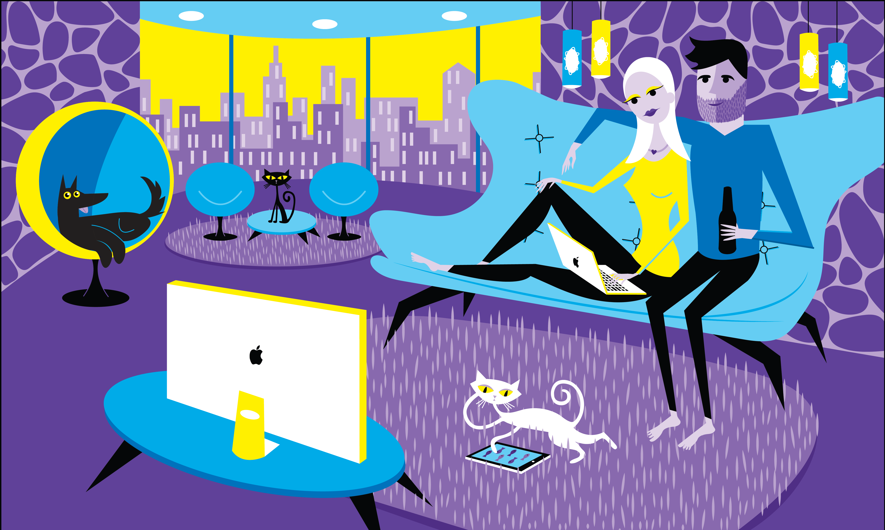

Inspired by Josh Agle my illustration focuses on the disconnect people have with each other in todays society. It exaggerates this concept with the pets also doing their own thing. The use of technology usually takes us away from the important things in life.
